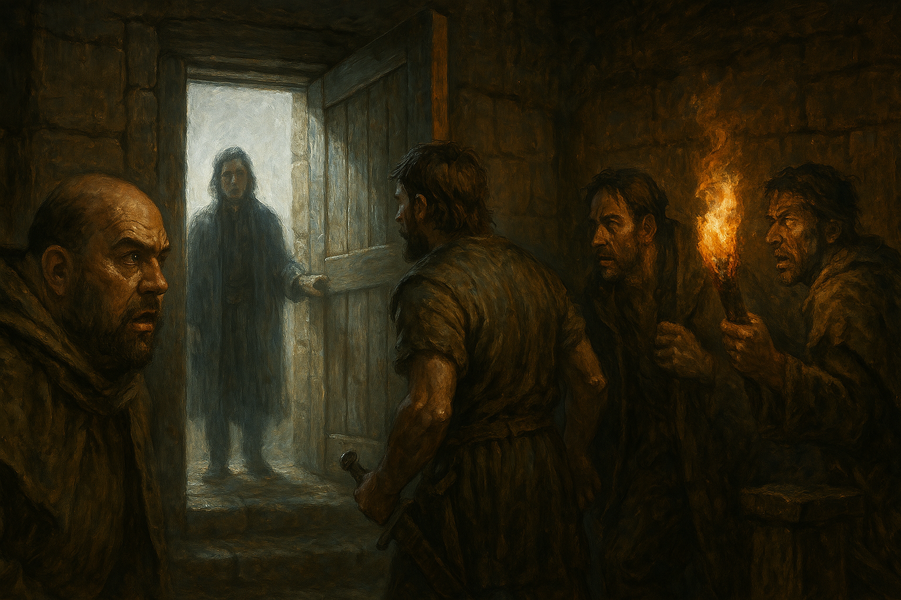

Chapter 3: Deal?
Mattington Shattered


Mattington Shattered
15048.11.16
錯愕的眾人看著墜兒的消失，摸不著頭緒。原本墜兒身邊的壯漢也露出驚詫的表情，在他的規劃中，自己也應該從這裡消失的。他趕緊轉換心情，走向冒險者們。其他惡漢們則趕緊跑到通道口，堵住冒險者們的去路。
對於冒險者們的逃脫，壯漢沒什麼意見，他唯一不願意釋放的是喬納森。壯漢提出了一個交易，請冒險者們到瑟巴諾的鎮長家，偷取一個有魔法的正方體盒子，並拿來給他，他就會將喬納森釋放。冒險者們想了想，決定先接受這個提議，接著便在惡漢們的允諾下離開了地底。
回到地面，夜色逐漸降臨，冒險者們對瑟巴諾不甚熟悉，在空蕩蕩的街道上，除了民宅外幾乎沒有商業行為，連路人都少之又少。冒險者們決定回到「酒館」探一探。
酒館的正門口推不開。華生嘗試解鎖成功，卻發現似乎是門內有人堵住了門口，於是大家決定從酒館的後門進入。出乎大家的意料之外，後門沒有鎖住。大家走入後門的倉庫後，發現倉庫通往酒館內部的門也被鎖住了。華生嘗試竊聽，發現酒館內的人們似乎在慶祝些什麼，而這些人應該都是拉索斯教的信仰者。
簡單探索，倉庫的右側堆滿了大的木箱，裡面都是空的；左側則整齊的排放了幾十個精緻的小木盒，高度大約是成年男子的身高。圖伊特發現盒子上寫了月神教使用的文字，似乎在讚頌著月神。華生拿起一個小木盒，發現有點沉重，用自己的武器嘗試撬開，「啪」的一聲，小木盒的蓋子像是彈簧般的彈開，裡面有六到十顆大小些微有差的黑色石頭，似乎一點光線都透不進去。華生、圖伊特、帕拉丁和蘇加魯各自拿了一兩顆起來端詳。圖伊特向帕拉丁借了他從月先生那裡拿到的石頭，想和這些石頭作比較，卻發現深黑色的石頭似乎將月先生的石頭迅速吸了過來，然後月先生的石頭便迅速炸裂，化為粉碎，圖伊特只好向帕拉丁連聲道歉。
倉庫通往酒館的門似乎被轉動了。一個醉醺醺的男人走了進來，拿走一盒小木盒，似乎沒有發現躲在倉庫內的冒險者們。男人走回酒館後，將門關上，但是似乎忘記鎖了。圖伊特偷偷聽到了酒館內的人們在討論這些石頭，似乎是要拿來建置什麼裝置的，而且十分稀有。華生嘗試帶走最大數量的小木盒，不過因為小木盒很重，最終只拿走了三盒。因為這些石頭是拉索斯教的信徒需要的，因此他想要將他們都摧毀。
因為覺得倉庫就在酒館的正後方，並不安全，冒險者們決定冒雨離開，準備往鎮長的家前進。依照壯漢的說明，繼續往前走，前方有座富麗堂皇的房子，那便是鎮長的家。路途中，華生找到了路旁的小水溝，便一口氣將他帶出來的深黑色石頭全部倒進去，只留下一顆自己保存。
距離鎮長的家越近，雨就變得越小，然後冒險者們看見了煙出現在鎮長家的後方。華生偽裝成一名老頭，希望自己的外貌不會讓鎮長的起疑。敲了敲門，冒險者們和應門的僕人告知房子後方可能失火了。僕人們趕緊提了水桶，開始救火，冒險者們也跟到了房子後方，發現縱火犯似乎是個與波年齡相仿的小男孩。帕拉丁前去協助打火，一名僕人帶著鎮長來到了現場。鎮長拄著拐杖，眼神痛惡的看著小男孩，要用拐杖打小男孩的屁股。然而，小男孩身手矯健，一把抓走了鎮長的拐杖，鎮長氣的不得了。冒險者們紛紛與小男孩打了起來，而受了重傷的小男孩則利用法術逃脫到了鎮長家的頂樓，並將拐杖丟了下來，砸中了其中一名僕人，僕人就地昏迷。
經過了交涉，受傷的小男孩決定屈服，於是從頂樓跳了下來，但也陷入了昏迷。在簡單救治後，小男孩終於甦醒，火也撲滅的差不多了。鎮長面色不悅的帶著僕人與冒險者們從正門進到屋內。小男孩向鎮長喊冤，表示自己只是想要進來住，但是在後門敲門發現沒有回應，只好放火燒了。蘇加魯聽了後代替鎮長打了小男孩的屁股。
鎮長無奈地向冒險者們表示作為感謝，他應該拿點什麼東西給他們，然後便拿了一個裝著金幣的小布袋，遞給了圖伊特，然後傳到帕拉丁的手中。帕拉丁也和鎮長請求讓大家在他的家中住一晚。經過分配，小男孩和圖伊特住一間，偽裝成老頭的華生表示要「採陰補陽」，和蘇加魯睡一間，而帕拉丁則獨自睡一間。擁有魔法能力的小男孩似乎感受到了鎮長房子內有個魔法力很強的東西，便試圖向鎮長詢問，但鎮長不願意透露更多。
睡前，帕拉丁找了華生與蘇加魯，討論是否要在今夜開始行動，尋找壯漢要他們奪取的魔法盒。華生和蘇加魯表示先不要輕舉妄動，先安然度過今夜，好好休息再說。而在帕拉丁離開後，華生向僕人要了點東西吃，拿到了一點麵包，作為晚餐。
15048.11.17
當晚，眾人都睡得香甜，唯獨蘇加魯，在他的夢中，隱約感覺到瑟巴諾除了拉索斯教以外，似乎還有更龐大的威脅。一早，蘇加魯便和他的夥伴們討論起這件事。
華生分派了自己的老鼠到鎮長家的二樓去，想尋找魔法盒子的位置，卻沒有找到，於是先躲在貴重倉庫的門後待命。不久後，圖伊特召喚的夸賽魔也尋找到了老鼠的蹤跡，一同行動。
在冒險者們討論的過程中，鎮長家的僕人前來打了聲招呼，為他們準備了麵包作為早點。一陣子後，鎮長也來到了房間。眾人決議要拿走壯漢要求的魔法盒子，但是自己帶走，不拿去和壯漢交易。隨後，冒險者們便和鎮長提起了關於傳聞中的魔法盒子一事。
鎮長嘆了口氣，詢問眾人是否就是為了這個盒子而來，也問了大家是不是霍布派來的，大家也才知道那位壯漢的名字叫霍布。鎮長表示稍晚可以給大家看看這個盒子，也許可以做個交易，把這個盒子換給冒險者們。同時，鎮長也和新任的爵士帕拉丁表示，有一些關於王國的事，想和他說一下。
此時，一名年輕的女子從鎮長身旁出現。他打了聲招呼，表示自己是鎮長太太，名叫安娜，外表年齡目測大約二十初頭，與年邁的鎮長相比，明顯年輕許多。此時，鎮長也才發現自己尚未向冒險者們自我介紹，他表示自己的名字叫索恩。
安娜表示自己要去鎮上買點東西，稍晚回來，便和各位道別，鎮長便帶帕拉丁先到樓上的辦公室去。華生的老鼠和圖伊特的夸賽魔也一同躲到了鎮長辦公桌底下竊聽。辦公室內，帕拉丁花了不少時間，和索恩鎮長說明了自從冒險以來的種種事蹟，接著便向鎮長詢問關於瑟巴諾附近城鎮的狀況。鎮長也和帕拉丁說明了昨晚得知的消息：麥丁頓王國的國王巴納沃二世決定退位，傳承給他的兒子艾略特四世。
談話結束後，鎮長便讓帕拉丁回到一樓，把夥伴們帶上來。眾人在鎮長辦公室的門口討論著接下來該怎麼做，碰巧外出購物的安娜剛好回來，便幫大家推開了門。鎮長拿出了神秘的盒子：一個用玻璃罩子罩住，底下是木頭基底的外殼，裡面則是一個漂浮在空中，七彩奪目的正方體盒子。木頭底座下刻有一些文字，在圖伊特的解讀下，得知是月神教的語言，說明這個物體有著傳送的功能。
大家詢問索恩鎮長怎麼會有這個寶物，鎮長表示這是他過去月神教的朋友留下來的遺物。這位朋友，夏曼曾是月神教的高僧，因為發現了他不可透露的某個關於月神教的秘密，便偷走了這個寶物，逃亡到了索恩的家裡，將寶物交給他藏好。不久後，夏曼便被刺殺了。
圖伊特的腦中不斷響起一個熟悉的聲音，重複喊著「去拿」。在聲音的蠱惑下，圖伊特伸手就要將寶物拿走，但在鎮長急速的保護下，保住了寶物。他趕緊將寶物收回身後的櫃子，以及喝斥圖伊特。圖伊特只好先退到了房子的角落去。
伊努不斷詢問關於這個寶物的事，也一直要求想要觸碰剛才差點被圖伊特拿走的寶物，卻屢屢遭到鎮長忽視，甚至讓鎮長感到不悅，因此鎮長請帕拉丁到隔壁臥室將鎮長夫人帶來，請鎮長夫人將伊努先帶到臥室休息。伊努感到不悅，最終在華生的陪伴下，與鎮長夫人三人一起先到臥室休息。
在夏曼將寶物交給索恩後，至今已經過了有二三十年，但索恩仍然不知道寶物真正的用途，只知道自己要保護好它。經過帕拉丁和蘇加魯的協調後，鎮長終於心軟，決定讓冒險者們將寶物的外殼打開，先檢視檢視，進行研究。
鎮長臥室內，安娜、華生與伊努閒聊著。伊努想對安娜施展魔法魅惑他，卻發現不但沒有成功，還反被安娜魅惑了。安娜詢問了伊努為何要來這裡，卻也得不到什麼答案。不過，在談話間，華生與伊努也才發現安娜其實不是人類，而是隻妖精。不久後，安娜將耳朵貼在鎮長辦公室側的牆壁，試著竊聽隔壁發生的事。華生與伊努照做，發現這堵牆似乎比他們想的還要薄，隔壁的聲音聽得一清二楚，像是沒有隔間似的。三人聽見了隔壁傳來了滋滋聲，安娜微微一笑，表示好戲就要上場了。
鎮長辦公室內，索恩再次將寶物拿出，放在桌上。圖伊特故作鎮定，試著抵擋腦中不斷傳來的笑聲。他輕輕將玻璃罩子提起，周圍傳出了滋滋巨響，奪目的白光照滿整個房間，所有人都像瞎了一般，什麼也看不見。圖伊特漸漸將罩子提高，同時命令自己的夸賽魔將此刻露出在外的魔法盒子取走。在圖伊特伸手向後將門打開，讓夸賽魔逃出後，他便故作鎮定的握著空無一物的玻璃罩子。房間內的光線恢復正常，留下震驚的鎮長，看著如今什麼都沒有的空殼子。
此時，在安娜的帶領下，華生和伊努都回到了鎮長辦公室門口。安娜快速地調整了自己的表情，以一種刻意的慌張的表情跑入了辦公室內，故作焦急地問鎮長發生了什麼事？鎮長沮喪地趴在了桌上，喊著「怎麼會沒了？」。圖伊特表示，也許是寶物的能量在玻璃照打開後消散了，整個消失了。鎮長意志消沉，將所有人都趕出了他的辦公室外。
安娜帶著冒險者們先到了一樓。在與安娜道歉後，冒險者們決定先行離開，再考慮下一步該怎麼走，畢竟沒了寶物，他們現在也無法去找霍布談交易。遠離了鎮長家一段時間，華生回頭想檢查有沒有人跟蹤大家，卻發現安娜在二樓的窗戶口遠遠看著大家離去，露出了詭譎的笑容，揮揮手和他們道別。冒險者們趕緊繼續向前行。
在圖伊特的解釋下，大家才了解，剛才在魔法盒子發出強光後，圖伊特吩咐他的夸賽魔將盒子帶出鎮長家外，幻化出翅膀，將魔法盒子帶到附近的森林旁，挖了個小洞，埋了進去，並在洞口守候。
眾人決定到圖伊特藏匿魔法盒子的位置，將盒子挖出來。圖伊特腦中的聲音開心的笑了出來，並向圖伊特表示「你知道怎麼用它」。圖伊特回想，過去有在荒郊野外見過類似的漂浮盒子，不過並未發光到這麼刺眼。經過摸索後，圖伊特發現小小的盒子內部空間似乎大到難以置信，他才發現這個盒子內部似乎是個次元洞。伸手進去，圖伊特掏出了數顆深黑色的石頭，與之前在霍布的倉庫發現的石頭十分相似。拿出了之前收起的幾顆石頭，他發現石頭似乎很快速地吸到了盒子上。最後，圖伊特決定先把盒子收到包包內保存。
冒險者們討論著下一步，決定先回麥克嵩去。然而，要回到麥克嵩，勢必要走回瑟巴諾的大街上。冒著被霍布的黨羽看見的風險，冒險者們小心翼翼的走回了大街。蘇加魯將背後的帽兜戴上，華生偽裝成一名小女孩，與伊努一人一手牽著蘇加魯。帕拉丁與圖伊特則分別走在隊伍的最前與最後，隨時注意周圍的狀況。
遠處，帕拉丁看見兩名貌似霍布的手下從遠處走來。仔細竊聽，他們似乎討論著等到魔法盒子到手後，便可開始蓋裝置，但是大約要花一個月的時間才能完工。其中一名混混看見化作小女孩的華生，便蹲下來，似乎想要調戲他，華生趁機攻擊他。見到華生偷襲，伊努也展開了攻勢，後方的圖伊特也加入戰局。沒幾下攻擊，兩名惡徒便倒地。華生將其中一名化成了殭屍，走在隊伍的最後方，護送大家。
走回了接近霍布的領地，街道上的人越來越多。幾名看起來像是霍布手下的人看見了走在隊伍最後面的「夥伴」，紛紛走向前去，而冒險者們則裝作什麼都沒看見。華生為了引開惡徒的注意力，讓跟在最後的殭屍折返，而惡徒們似乎發現了什麼不對勁，推倒了殭屍，便從後方追了上來，抓住了圖伊特的肩膀。
看見了圖伊特被惡徒們控制住，華生趕緊朝惡徒們的方向製造了魔法黑暗。同時，冒險者們圍繞著黑暗，等待從裡頭跑出的惡徒們，想趁機攻擊他們。他們聽見了黑暗中傳來了刀子砍殺的聲音，同時外頭也有一群看起來也像霍布的黨羽的人，紛紛走入黑暗中。不久後，這群人從黑暗中將人們紛紛扛了出來，其中也包含了昏迷中的圖伊特。黑暗範圍外的冒險者們也不敢下手。
悄悄關注著這群人的動靜，冒險者們看見他們紛紛走回霍布的酒館，於是他們便在酒館的門關上後，到對街從遠處觀察，並討論下一步怎麼走。首先，華生讓他的老鼠潛入酒館內，看見了惡徒們都坐在酒館內討論著，霍布和被他壓制的喬納森在吧檯內。接著，華生讓老鼠跑到了往後門的門鎖上，施放了魔法鎖，不過在接觸到鎖的那一刻，老鼠感受到了一種不舒適的黏糊感。
門外，冒險者們決定用火球朝著酒館門口丟擲。然而，在伊努出手後，卻發現火球在碰到木門幾秒後，竟然消散了。這時，冒險者們才發現酒館的門和旁邊的牆，外面竟然有種黏膩感。然後們悄悄地打開了。
15048.11.16
The stunned people looked at the disappearance of Drayer and were confused. Originally, the strong man next to Drayer also showed a surprised expression. In his plan, he should also disappear from here. He quickly changed his mood and walked towards the adventurers. Other villains hurried to the entrance of the passage and blocked the adventurers' way.
The strong man has no objection to the escape of the adventurers. The only thing he is unwilling to release is Jonathan. The strong man proposed a deal, asking the adventurers to go to the mayor's house of Sebano, steal a magic cube box, and bring it to him, and he would release Jonathan. The adventurers thought for a while, decided to accept the proposal first, and then left the underground with the villains' permission.
Back on the ground, night gradually fell. The adventurers were not very familiar with Sebano. On the empty streets, there were almost no commercial activities except private houses, and there were very few passers-by. The adventurers decided to return to the "Tavern" to explore.
The front door of the tavern cannot be pushed open. Watson tried to unlock it successfully, but found that someone seemed to be blocking the door, so everyone decided to enter through the back door of the pub. To everyone's surprise, the back door was unlocked. After everyone walked into the warehouse at the back door, they found that the door from the warehouse to the inside of the tavern was also locked. Watson tried eavesdropping and found that people in the tavern seemed to be celebrating something, and these people should be believers in the Rathos religion.
After a brief exploration, the right side of the warehouse is filled with large wooden boxes, all of which are empty; on the left side, dozens of exquisite small wooden boxes are neatly arranged, about the height of an adult man. Tweeter found that the words used by the Luna Cult were written on the box, which seemed to be praising the Moon God. Watson picked up a small wooden box and found it was a bit heavy. He tried to pry it open with his own weapon. With a "pop" sound, the lid of the small wooden box popped open like a spring. There were six to ten black stones of slightly different sizes inside, and it seemed that no light could penetrate. Watson, Tweeter, Paladin and Sugalu each took one or two and looked at them. Tweeter borrowed the stones he got from Paladin from Paladin, and wanted to compare them with these stones, but found that the dark black stone seemed to suck Mr. Moon's stone quickly, and then Mr. Moon's stone quickly exploded into pieces, and Tweeter had to apologize to Paladin.
The door from the warehouse to the tavern seems to have been turned. A drunk man walked in and took away a small wooden box, seemingly not noticing the adventurers hiding in the warehouse. After the man walked back to the tavern, he closed the door, but seemed to have forgotten to lock it. Tweeter secretly heard people in the tavern discussing these stones. They seemed to be used to build some kind of device, and they were very rare. Watson tried to take away the maximum number of small wooden boxes, but because the small wooden boxes were heavy, he only took three boxes. Since these stones were needed by the followers of Rathos, he wanted to destroy them all.
Because the warehouse was right behind the tavern and was not safe, the adventurers decided to leave in the rain and prepare to head towards the mayor's home. Follow the strong man's instructions and continue walking forward. There is a magnificent house in front of you, which is the mayor's home. On the way, Watson found a small ditch by the road and poured all the dark black stones he brought out into it, leaving only one for himself.
The closer to the mayor's house, the lighter the rain became, and then the adventurers saw smoke appearing behind the mayor's house. Watson disguised himself as an old man, hoping that his appearance would not make the mayor suspicious. After knocking on the door, the adventurers and the servant who answered the door informed that there might be a fire at the back of the house. The servants quickly brought buckets and started to put out the fire. The adventurers also followed to the back of the house and found that the arsonist seemed to be a little boy about the same age as Beau. Paladin went to help start the fire, and a servant came to the scene with the mayor. The mayor was leaning on a cane, looking at the little boy with hateful eyes, and wanted to spank the little boy with the cane. However, the little boy was very skillful and grabbed the mayor's crutch. The mayor was very angry. The adventurers fought with the little boy one after another, and the seriously injured boy used magic to escape to the top floor of the mayor's house, dropped his crutch, and hit one of the servants, who was knocked unconscious on the spot.
After negotiation, the injured boy decided to give in and jumped from the top floor, but he also fell into a coma. After simple treatment, the little boy finally regained consciousness and the fire was almost extinguished. The mayor led the servants and adventurers into the house through the main entrance with an unhappy look on his face. The little boy complained to the mayor, saying that he just wanted to live in the house, but when he knocked on the back door and found no response, he had to set it on fire. Sugalu After hearing this, he spanked the little boy in place of the mayor.
The mayor reluctantly expressed his gratitude to the adventurers and said that he should give them something. Then he took a small cloth bag containing gold coins and handed it to Tweeter, and then passed it to Paladin's hands. Paladin also asked the mayor to let everyone stay at his home for one night. After being assigned, the little boy lived in a room with Tweeter. Watson, disguised as an old man, said that he wanted to "pick up yin and replenish yang" and slept in a room with Sugalu, while Paladin slept alone. The little boy with magical abilities seemed to feel that there was something very magical in the mayor's house, so he tried to ask the mayor, but the mayor was unwilling to reveal more.
Before going to bed, Paladin met with Watson and Sugalu to discuss whether to take action tonight to find the magic box that the strong man wanted them to capture. Watson and Sugalu said not to act rashly, but to spend the night peacefully and have a good rest. After Paladin left, Watson asked the servant for something to eat and got some bread as dinner.
15048.11.17
Everyone slept soundly that night, except Sugalu. In his dream, he vaguely felt that Sebano seemed to have a greater threat besides the Lassos Cult. Early in the morning, Sugalu discussed this matter with his friends.
Watson assigned his mouse to the second floor of the mayor's house to find the location of the magic box, but failed to find it, so he hid behind the door of the valuable warehouse and waited. Soon after, the Quasaimon summoned by Tweeter also found traces of the mouse and acted together.
While the adventurers were discussing, the mayor's servant came to say hello and prepared bread for them as breakfast. After a while, the mayor also came to the room. Everyone decided to take away the magic box requested by the strong man, but take it away themselves instead of trading it with the strong man. Later, the adventurers mentioned the rumored magic box to the mayor.
The mayor sighed and asked everyone if they came just for this box, and also asked everyone if it was sent by Hobb. Only then did everyone find out that the strong man's name was Hobb. The mayor said that he could show the box to everyone later, and maybe make a deal to exchange the box for the adventurers. At the same time, the mayor also told the new Sir Paladin that he had some things about the kingdom that he wanted to tell him.
At this time, a young woman appeared from beside the mayor. He said hello and said that he was the mayor's wife, her name was Anna, her appearance was estimated to be in her early twenties, and she was obviously much younger than the elderly mayor. At this time, the mayor also realized that Sean had not introduced himself to the adventurers. He said that his name was Thorne.
Anna said that he was going to town to buy some things and would come back later and said goodbye to everyone. The mayor then took Paladin to the office upstairs first. Watson's rat and Tweeter's Quasaimon also hid under the mayor's desk and eavesdropped. In the office, Paladin spent a lot of time explaining the various deeds since the adventure to Mayor Thorne, and then asked the mayor about the status of towns near Sebano. The mayor also explained to Paladin the news he learned last night: King King Benevol II of the Mattington kingdom decided to abdicate and pass it on to his son King Elliot IV.
After the conversation, the mayor asked Paladin to return to the first floor and bring his friends up. Everyone was discussing what to do next at the door of the mayor's office. Anna, who happened to be out shopping, happened to come back and opened the door for everyone. The mayor took out a mysterious box: a shell covered by a glass cover with a wooden base underneath, and inside was a colorful cubic box floating in the air. There are some words engraved under the wooden base. After Tweeter's interpretation, it was learned that they are the language of the Moon God Cult, indicating that this object has the function of teleportation.
Everyone asked Mayor Thorne how he had this treasure. The mayor said that it was a relic left by his friends from the Luna Sect in the past. This friend, Sharman, was once a high monk of the Luna Cult. Because he discovered a secret about the Luna Cult that he could not reveal, he stole the treasure, fled to Thorne's house, and gave the treasure to him to hide. Sharman was assassinated shortly after.
Tweeter A familiar voice kept ringing in his head, shouting "Take it" repeatedly. Under the influence of the voice, Tweeter stretched out his hand to take away the treasure, but under the mayor's quick protection, he saved the treasure. He quickly put the treasure back into the cabinet behind him and yelled at Tweeter. Tweeter had no choice but to retreat to the corner of the house.
Inu kept asking about this treasure, and kept asking to touch the treasure that was almost taken away by Tweeter just now, but was repeatedly ignored by the mayor, and even made the mayor unhappy. Therefore, the mayor asked Paladin to bring the mayor's wife to the next bedroom, and asked the mayor's wife to take Inu to the bedroom to rest first. Inu felt unhappy, and finally, accompanied by Watson, he and the mayor's wife went to the bedroom to rest.
Twenty or thirty years have passed since Sharman handed the treasure to Thorne, but Thorne still doesn't know the true purpose of the treasure. He only knows that he must protect it. After the coordination between Paladin and Sugalu, the mayor finally relented and decided to let the adventurers open the shell of the treasure, inspect it first, and conduct research.
In the mayor's bedroom, Anna, Watson and Inu were chatting. Inu wanted to cast magic on Anna to charm him, but found that not only did he not succeed, but he was also charmed by Anna. Anna asked Inu why he came here, but he couldn't get any answer. However, during the conversation, Watson and Inu also discovered that Anna was not actually a human being, but a goblin. Soon after, Anna put his ear to the wall next to the mayor's office, trying to eavesdrop on what was going on next door. Watson and Inu did as they were told, and found that the wall seemed to be thinner than they thought, and the sounds next door could be heard clearly, as if there were no partitions. The three heard a sizzling sound coming from next door, and Anna smiled slightly, indicating that the show was about to begin.
In the mayor's office, Thorne took out the treasure again and placed it on the table. Tweeter pretended to be calm and tried to resist the laughter that kept coming from his head. He gently lifted the glass cover, and there was a loud sizzling sound all around, and dazzling white light filled the entire room. Everyone seemed to be blind and could not see anything. Tweeter gradually raised the cover, and at the same time ordered his Quasai Demon to take away the magic box that was exposed at the moment. After Tweeter reached back and opened the door to allow the Quasaimon to escape, he pretended to be calm and held the empty glass cover. The light in the room returned to normal, leaving the shocked mayor looking at the empty shell that now contained nothing.
At this time, under the leadership of Anna, Watson and Inu returned to the door of the mayor's office. Anna quickly adjusted his expression and ran into the office with a deliberately panicked expression. He pretended to be anxious and asked the mayor what happened? The mayor fell on the table in frustration and shouted, "Why is it gone?" Tweeter said that maybe the energy of the treasure dissipated after the glass was opened and completely disappeared. The mayor became demoralized and kicked everyone out of his office.
Anna led the adventurers to the first floor first. After apologizing to Anna, the adventurers decided to leave first and then consider their next step. After all, without the treasure, they could not go to Hobb to negotiate a deal. After staying away from the mayor's house for a while, Watson looked back to check if anyone was following everyone, but found Anna watching everyone leave from a distance from the window on the second floor, showing a weird smile, and waved goodbye to them. The adventurers quickly moved forward.
Under Tweeter's explanation, everyone understood that after the magic box emitted a strong light just now, Tweeter ordered his quasai demon to take the box out of the mayor's house, transformed into wings, took the magic box to the nearby forest, dug a small hole, buried it, and waited at the entrance of the hole.
Everyone decided to go to the location where Tweeter hid the magic box and dig out the box. The voice in Tweeter's head laughed happily and told Tweeter "you know how to use it". Tweeter Looking back, I have seen similar floating boxes in the wilderness in the past, but they were not so dazzling. After groping, Tweeter found that the space inside the small box seemed incredibly large, and he discovered that the inside of the box seemed to be a dimensional hole. Reaching in, Tweeter pulled out several dark black stones that were very similar to those previously found in Hobb's warehouse. Taking out a few stones that he had put away before, he found that the stones seemed to be attracted to the box very quickly. Finally, Tweeter decided to put the box in the bag and keep it.
The adventurers discussed the next step and decided to go back to Macksohn first. However, to return to Macksohn, you have to go back to the streets of Sebano. Risking being seen by Hobb's henchmen, the adventurers carefully walked back to the street. Sugalu put on the hood behind his back, and Watson disguised himself as a little girl, holding Sugalu hand in hand with Inu. Paladin and Tweeter walked at the front and last of the team respectively, always paying attention to the surrounding conditions.
In the distance, Paladin saw two men who looked like Hobb coming from a distance. From careful eavesdropping, they seemed to be discussing that they could start building the device once the magic box was in hand, but it would take about a month to complete. One of the gangsters saw Watson transforming into a little girl and squatted down as if he wanted to tease him. Watson took the opportunity to attack him. Seeing Watson's sneak attack, Inu also launched an offensive, and Tweeter in the rear also joined the battle. After a few attacks, the two villains fell to the ground. Watson turned one of them into a zombie and walked at the end of the team to escort everyone.
Walked back to the territory close to Hobb, and there were more and more people on the street. Several people who looked like Hobb's subordinates saw the "partners" walking at the back of the team and moved forward one after another, while the adventurers pretended not to see anything. In order to divert the attention of the villains, Watson made the zombie following him turn back. The villains seemed to have discovered something was wrong, pushed the zombies down, and then chased after him from behind and grabbed Tweeter's shoulders.
Seeing Tweeter being controlled by the villains, Watson quickly created magical darkness in the direction of the villains. At the same time, the adventurers surrounded the darkness, waiting for the villains to run out of it, hoping to attack them. They heard the sound of knife slashing in the darkness, and at the same time, a group of people who looked like Hobb's henchmen walked into the darkness outside. Soon after, this group of people carried people out from the darkness, including the unconscious Tweeter. Adventurers outside the dark range also dare not take action.
Quietly paying attention to the movements of this group of people, the adventurers saw them walking back to Hobb's tavern, so after closing the door of the tavern, they went to the other side of the street to observe from a distance and discuss their next move. First, Watson let his rats sneak into the tavern and saw the villains sitting in the tavern discussing. Hobb and Jonathan, who was suppressed by him, were at the bar. Then, Watson let the mouse run to the door lock of the back door and cast the magic lock. However, the moment it touched the lock, the mouse felt an uncomfortable sticky feeling.
Outside the door, the adventurers decided to throw fireballs at the door of the tavern. However, after Inu took action, he found that the fireball dissipated a few seconds after hitting the wooden door. At this time, the adventurers discovered that there was a sticky feeling on the outside of the tavern door and the wall next to it. Then they opened quietly.